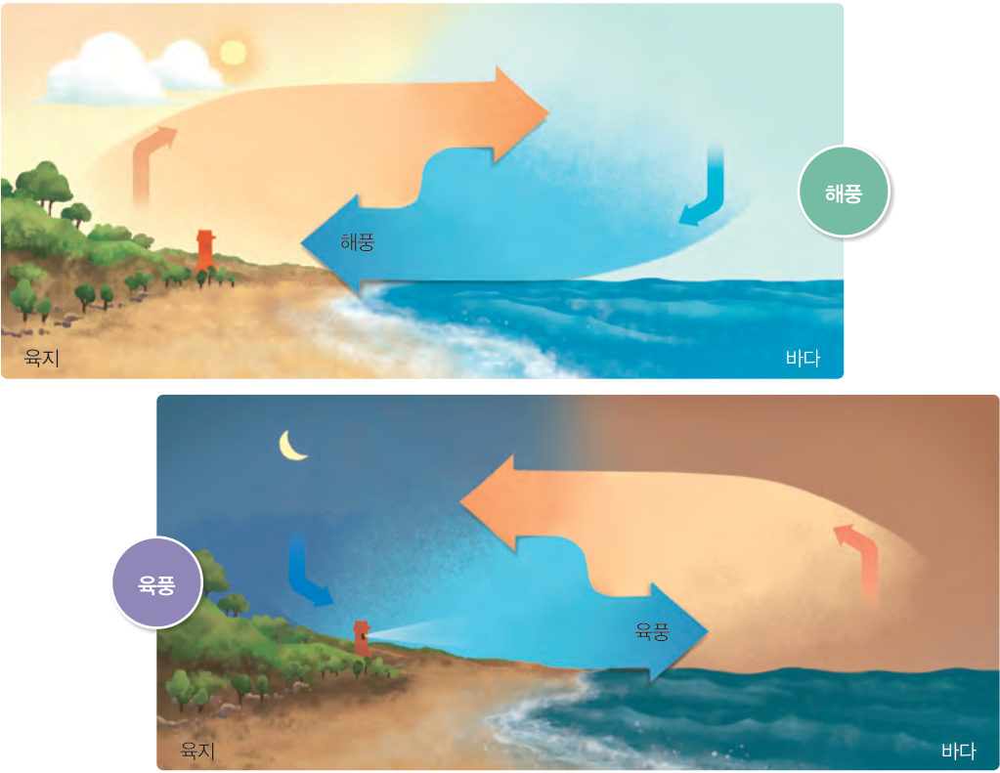
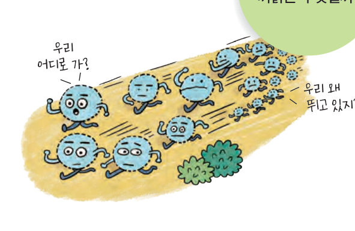
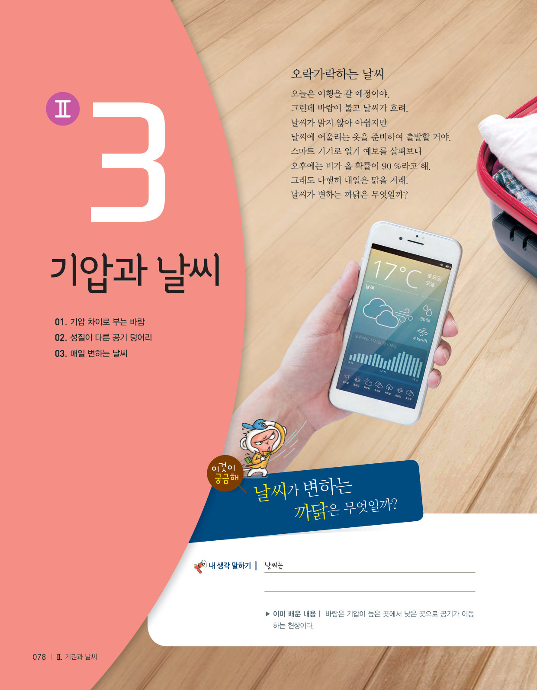
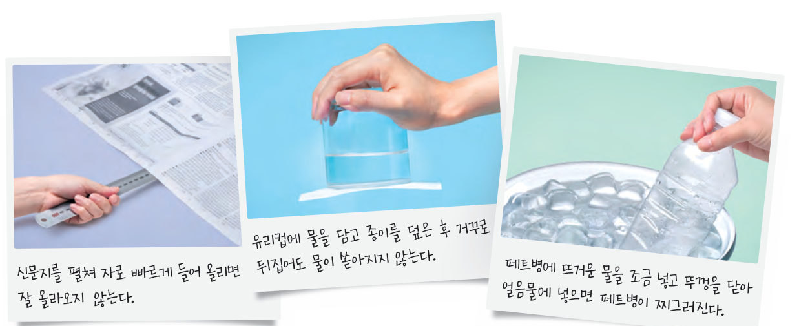
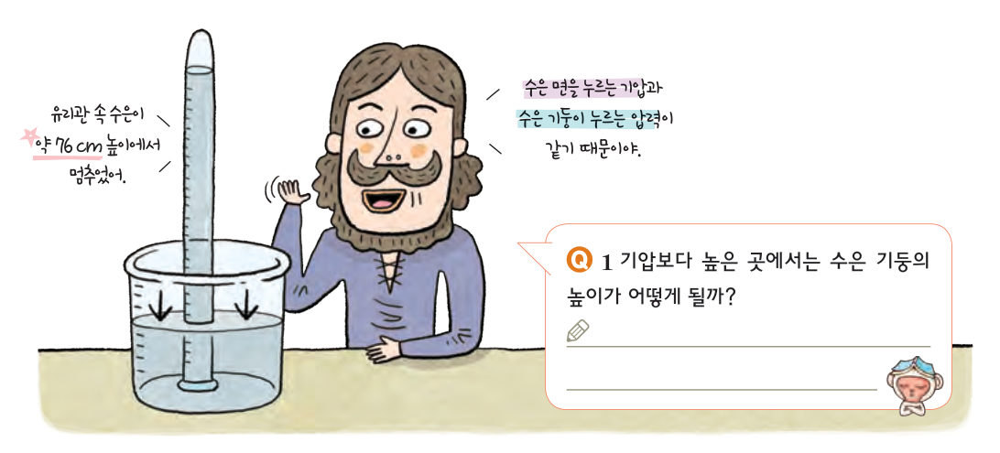
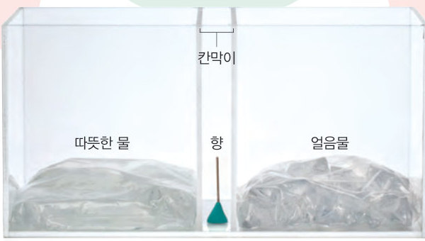
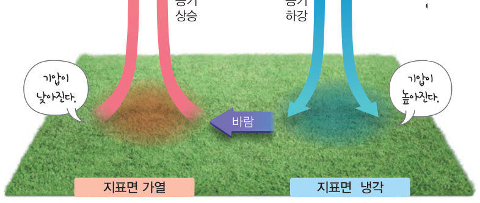

공기가 이동하는 까닭은 무엇일까? 토리첼리 실험 장치를 들고 산에 올라 기압 변화를 확인하고, 가상 수조의 향 연기와 해안의 하루로 기압 차이가 바람을 만든다는 것을 살펴보자.

오늘은 여행을 갈 예정이야. 그런데 바람이 불고 날씨가 흐려. 날씨가 맑지 않아 아쉽지만 날씨에 어울리는 옷을 준비하여 출발할 거야. 스마트 기기로 일기 예보를 살펴보니 오후에는 비가 올 확률이 90 %라고 해. 그래도 다행히 내일은 맑을 거래. 날씨가 변하는 까닭은 무엇일까?
▶ 이미 배운 내용 | 바람은 기압이 높은 곳에서 낮은 곳으로 공기가 이동하는 현상이다.
🔑 첫 번째 열쇠 바람이 부는 까닭을 알아본다. · 두 번째 열쇠 전선이 형성되는 과정을 확인한다. · 세 번째 열쇠 기압 변화에 따라 날씨가 어떻게 달라지는지 알아본다.
이 단원과 관련해 이미 알고 있는 것에 표시해 보자.

공기는 질소, 산소 등 여러 가지 기체로 이루어져 있다. 공기가 단위 넓이에 작용하는 힘을 기압이라고 한다. 기압은 모든 방향으로 작용한다. 그런데 일상생활에서 우리가 기압을 느끼지 못하는 것은 기압과 같은 크기의 압력이 몸속에서 외부로 작용하고 있기 때문이다.

기압의 크기를 최초로 측정한 사람은 토리첼리(1608~1647)이다. 토리첼리는 한쪽 끝이 막혀 있는 유리관에 수은을 가득 채우고, 수은이 담긴 그릇에 유리관을 거꾸로 세워 기압의 크기를 측정하였다. 1 기압 = 76 cmHg ≒ 1013 hPa (hPa: 1 m²의 넓이에 100 N의 힘이 작용할 때의 압력이 1 hPa)
기권에서 공기는 대부분 대류권에 모여 있고 지표에서 높이 올라갈수록 그 양이 줄어들어 기압은 급격히 낮아진다. 또한, 공기가 끊임없이 움직이기 때문에 기압은 측정하는 장소와 시각에 따라서도 달라진다.

기권에서 공기는 기압이 높은 곳에서 낮은 곳으로 이동하는데, 이를 바람이라고 한다. 바람이 불어오는 방향을 풍향이라 하고, 바람의 세기를 풍속이라고 한다. 수조에서 기온이 높은 쪽에서는 공기의 밀도가 작아져 상승하면서 기압이 낮아지고, 기온이 낮은 쪽에서는 공기의 밀도가 커져 하강하면서 기압이 높아진다. 이와 마찬가지로 지표면에 기온 차이가 생기면 기압 차이가 생기고, 공기는 기압이 높은 곳에서 낮은 곳으로 이동하여 바람이 분다. 이때 풍속은 기압 차이가 클수록 빨라진다.

해안에서는 낮에는 육지가 바다보다 빨리 가열되기 때문에 육지의 기압이 바다의 기압보다 낮아져서 해풍이 분다. 또, 밤에는 육지가 바다보다 빨리 냉각되기 때문에 육지의 기압이 바다의 기압보다 높아져서 육풍이 분다. 이와 같이 해안에서 하루를 주기로 풍향이 바뀌는 바람을 해륙풍이라고 한다. (바다와 육지의 열용량 차이로 바다는 육지보다 천천히 가열되고 천천히 냉각된다.)
| 평가 기준 | 스스로 평가 |
|---|---|
| 기압의 개념을 설명할 수 있다. | |
| 바람이 부는 까닭을 기압 차이로 설명할 수 있다. |